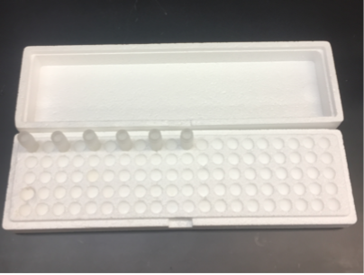

Freezing Worms
Adapted from Robyn Tanny December 2013
Freezing Protocol
-
Pick worms to six 6 cm plates for a particular strain.
-
Check the genotype of the strain so you can follow any phenotypes to make sure the animals are correct.
-
Store the plates at the optimal temperature for your strain (20°C for most strains) until the 6 cm plates have no bacteria left on them.
-
The strain is ready to freeze when there is no bacteria on the plate and there are few or no embryos remaining on the plate. Most of the animals should be L1, L2, or dauer.
-
Prepare the number of cryovial tubes with cryo-safe labels with the appropriate information (e.g. strain name and date frozen) that you want to freeze. Use "Cryovials Label Template" for printing labels with the correct information.
-
We currently freeze six cryovial tubes per strain: four for our working stocks and one for long-term liquid nitrogen storage and an extra sixth tube to use as a test thaw.
-
**If you want to freeze more than six tubes, you should prepare more than six 6 cm plates per strain.
-
When the last tube is thawed, you must refreeze the strain.
-
When the strain is ready to be frozen, use a sterile 10 mL serological pipette to aliquot 3 mL of freezing solution (recipe below) into a 15 mL conical tube. Aliquot ~3.5 mL of M9 (recipe below) into a different 15 mL conical tube.
-
Loosen the lids on all the cryovials.
-
Wash worms off the plate by pouring the ~3-4 mL of M9 onto one 6 cm plate. Shake/swirl the plate once and then transfer the worms and M9 to the next 6 cm plate until all six plates are washed of worms. Do this very quickly as the M9 will soak into the plate. Transfer the worms to the 15 mL conical with the freezing buffer. The final volume in the conical should be 6 mL.Add more M9 if needed
-
Use a new, sterile, pipette to pipette the M9/worm/freezing solution mixture up and down once to mix. Be gentle, and do this slowly as to not introduce bubbles into the mixture.
-
Use the same sterile pipette to aliquot 1 mL of the M9/worm/freezing solution mixture into each of the tubes, replace the caps, and place tubes in a 1.5 mL tube styrofoam container in the -80°C.

-
Cover the 1.5 mL tube styrofoam container with the lid and secure with a rubber band.
-
Make sure to enter the strain in the "Worms" database in Quartzy.
-
After at least 24 hr., move four tubes to the next available position in the Working Stock Boxes (check Quartzy for the last strain put in position), move one tube to the next available position in the Liquid Nitrogen Stock boxes (check Quartzy) and thaw one tube as a test thaw.
-
Put a space in between each strain that you freeze.

-
If you froze a test thaw, empty the contents of the tube onto a 10 cm plate just after the contents melt. Check the plate after ~48-72 hr. If you see gravid animals and embryos on the plate, the strain survived the thaw. If you do not see gravid animals and embryos, try freezing the strain again. If the strain has a transgenic marker, check to see if the thawed stock still expresses the marker.
-
As you move the strain into the Working Stock Boxes and the Liquid Nitrogen Stock Boxes, make sure to write down the locations in the Freezer Log (i.e. - write down the information while you are physically moving the strains!).
-
If the strain information is not already in Quartzy, make sure to enter that information (any plasmids/genotypes of the strain, if the strain was lab-made, received form another lab or the CGC, and growing temperature). After the tubes have been to the final Working and Liquid Nitrogen Stock positions (step 12), indicate that information for that strain in Quartzy (and how many are in stock).
Notes for freezing more than one strain at a time:
-
Aliquot freezing solution/M9 into all of the necessary 15 mL conicals at once. Leave the caps on loosely so you can move through the protocol more quickly.
-
Arrange your strain plates and sets of tubes in alpha-numeric order.
-
You can put up to six strains in a single styrofoam container.
-
If you have more than 10 strains to freeze, move the tubes for 10 strains (in their styrofoam containers) to the -80°C freezer before freezing the next set of strains.
-
You don't want the animals in freezer solution at room temperature for too long. You want to move them to -80°C as soon as possible.
-
Enter your strains in Quartzy (freezer box locations) in the exact order you froze them. That way, when you move the tubes into the Working and Liquid Nitrogen Boxes, the tubes will be in the same order as listed in the Freezer Log.
Thawing and Cleaning Worms
-
Remove the right-most freezing solution tube of those remaining in the Working Stock Box. If the left-most tube is the only tube remaining, you must make sure to freeze new copies of this strain after the strain is cleaned.
-
Follow the freezing protocol as listed above, but you should only need to freeze five tubes: four for the Working Stock Boxes and one for the test thaw.
-
Right as the contents of the tube are melting at room temperature, decant the contents onto a clean, seeded 10 cm plate. Incubate the plate at the optimal temperature for the worms.
-
Delete the appropriate tube form the Working Stock Box database in Quartzy.
-
If there is contamination:
a. Once there are gravid animals on the 10 cm plate, bleach the animals to clean any bacterial contaminants:
i. Place 15 µL of bleach solution (recipe below) on the edge of a labeled 6 cm plate.
ii. Place a minimum of 6 gravid animals into the bleach (10-15 animals is good). The bleach should dissolve the cuticle of the adult worms, releasing the embryos. Leave the plate lid-side up until all the bleach has soaked into the plate. After the bleach has soaked in, move the plate, lid-side down, to the optimal temperature for the worms.
iii. After ~24 hr., move L1s from the bleach plate to 4 separate clean, labeled 6 cm plates. You want between 10-20 L1s per plate- the more, the better.
b. Parafilm the clean plates to keep at 15°C.
Recipes
M9
-
Mix the following:
Reagent Amount Needed KH2PO4 6 g Na2HPO4 12 g NaCl 10 g dH2O up to 2 L -
Autoclave on liquid cycle for 30 min.
-
Make sure the volume is maintained during autoclaving by autoclaving in the large autoclave (the autoclave on the left).
-
When the M9 is cool, add: MgSO4 0.5 mL for 500 mL
-
Store in 2 L aliquots.
Freezing Solution
-
Mix the following:
Reagent Amount Needed Potassium phosphate buffer, 1 M pH 6 100 mL NaCl, 5 M 40 mL Glycerol, 100% 600 mL dH2O up to 2 L -
Divide into 250 mL aliquots.
-
Autoclave on liquid cycle for 30 min.
-
Add MgSO4 to a final concentration of 0.3 mM (e.g. for 200 mL of freezing solution, add 60 µL of 1 M MgSO4).
Bleach Solution
-
Mix the following:
Reagent Amount Needed NaOCl (from Fisher, cat #SS290-1) 2 mL 10 M NaOH 0.5 mL dH2O up to 10 mL
Store at 4°C.